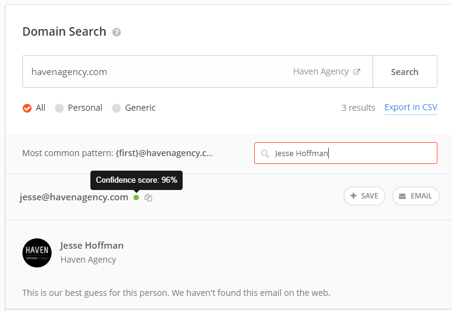

How I got my job
Finding a job, especially after a Boot Camp, can be a very strenuous task. I am going to walk through some of the things that I did while trying to find my first job after completing my Full Stack Web Development course at UCI.
The first thing I did was make sure that my personal social media profiles were up to date and contained all the information that I want my future employers to see. My LinkedIn Profile was key. I added all my projects to it, because this is something I really wanted to highlight. Future employers really care about the projects you have worked on. Organizing your Github account is also really important. Putting your most successful projects on the main page helps a lot. It is a really easy way to highlight your skill set.
The second and most important thing that I focused on was my portfolio website. It is really important to have a well made personal website, because it is a very easy way to get employers interested in what you have done. Instead of them being in control of what they see (like in LinkedIn and GitHub), a personal website gives you total control. You can also purchase a 99 cent GoDaddy domain and point that to your Heroku or Github account. Having your own domain is another easy, but impressive thing for employers.
My Journey
In the beginning stages of my job search I had used the traditional way of finding jobs on LinkedIn and Indeed.com and filling out the Job Application Forms. I had filled out more than 100 forms to no avail. It was extremely frustrating. I was not getting responses from even the most basic positions. Even ones that required zero experience and even the ones that required only a little bit of HTML and CSS experience. I knew I was overqualified for these roles, but I still applied...But no response.
Then I put myself in the shoes of the recruiters. I realized, since I, myself, was filling out 100s of applications, the recruiters also must be getting 100s of notifications each day from hopeful candidates. They would run through most of them and probably hit the delete button on a lot of them without even giving them a chance. With just a bootcamp of 6 months of experience towards my name, I must have been one of those deleted profiles.
I looked back to my days as a sales guy. My clients would get 100s of email every day. What makes me stand out? It became obvious that I needed to do something totally different to be able to land a job.
Here is my process which landed me my job:
I realized that there is no point in reaching out to Human Resources people for a job. They are probably the ones who are posting the job requirements on Indeed, and they are the ones getting the notifications when I apply. They were just filtering me out based on the requirements set by the actual dev team. My profile is not even reaching the Development Team Leads and Web Development Managers.
It was in my best interest to get my resume directly to the Web Development Leads or the Web Development Managers. I went back to some of the companies that I applied to and went to their LinkedIn Pages. From there I went to the list of employees in those companies and searched in particular for Web Development Team Leads or Web Development Managers.
Once I got their name, I would use a tool called hunter.io to find their email address. Then I would write an email directly to them applying for the job.
I did this for 5 companies initially. I got 4 responses from that effort. Instead of filling out countless forms and hearing nothing, I actually got 4 concrete answers! That is an 80% conversion for me. The results were that 2 of them said that they had already filled the position and 1 of them said that I should fill out the form on their website. The last one, however, asked me a few questions regarding my web development experience. I responded with answers to their questions and then was immediately called in for an interview. I landed that job!
Indeed.com or Glassdoor.com

From here you will find out the companies that are actively searching for web developers. I found that Indeed and Glassdoor were the most updated and best. Search for profiles that match your skill set and, initially, do not aim too high. Do not worry about getting everything that you want or the salary. You will be setting yourself up for failure. Try to get your foot into the door. Once you get your first job, you will always grow. Play the long game. Once you find a company that fits your skillset, just fill out the form. It takes a few minutes and you have nothing to lose.
LinkedIn Search


After filling out the form, go to the company's LinkedIn Page. From the LinkedIn Page go to the section which says "See All XX employees on LinkedIn. From there search for anyone that has to do with Web Development. The more the better. If it is a smaller company add the CEO or owner of the company as well. He may be able to point you in the right direction at least or may even be a reference for you.
How Hunter.io Works
Hunter.io allows you to get the emails of people in a company. It uses internet searches to guess what the email of an individual might be. You have to create an account for it. It is free. Once you create an account, just put in the domain and name of the person you found in your LinkedIn Search. It will give you a guessed email of that person. It would be best if you found the email of atleast 2 to 3 people from that company to get the highest chances of reaching the right person.
Email those People

Email all the people whose emails you found from Hunter.io. Keep the email brief. Here is an example of my email.
Hi,
My name is Adam. I am an aspiring Web Developer and I am about to complete the Full Stack Web Development Program at UCI. Please find attached my resume. I understand that XXXXXXXXX has a requirement for a Junior Web Developer. I am interested in learning more about this position and would love to be given the opportunity to fill it. I have read through the Job description and I am certain that I qualify for the position.
Please take a look at my personal portfolio and profile at http://www.adamscode.com. Also feel free to look at my Github account at https://github.com/medaman.
You can reach me at 805-618-5251. I really look forward to hearing from you.
--
Regards,
Adam Husain
Send something similar to the employer and then wait for a response. Since you are emailing the Web Development Team, there is a higher likelihood they will read the email and a high likelihood that they will respond.
This article may not be the best written article, but I have tried my best to help you guys out in your process of finding a job. I wish you all the best in your search, and do let me know if this helped you out or if you have any ways to improve my process. Good Luck!